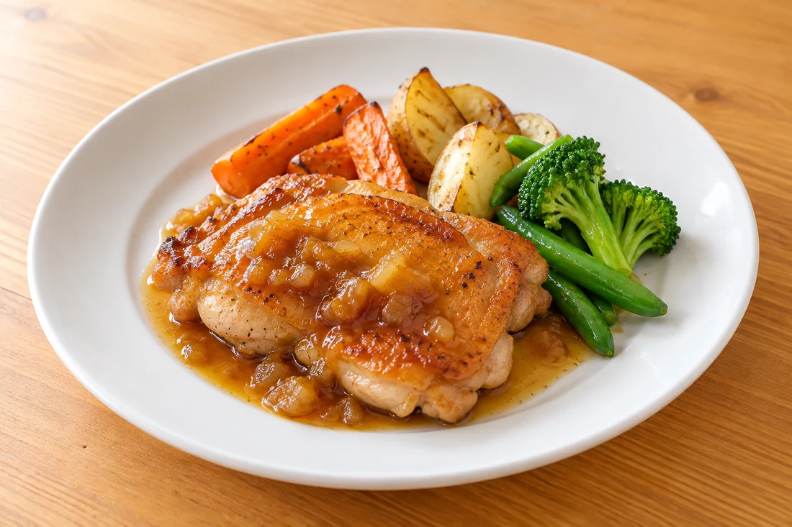
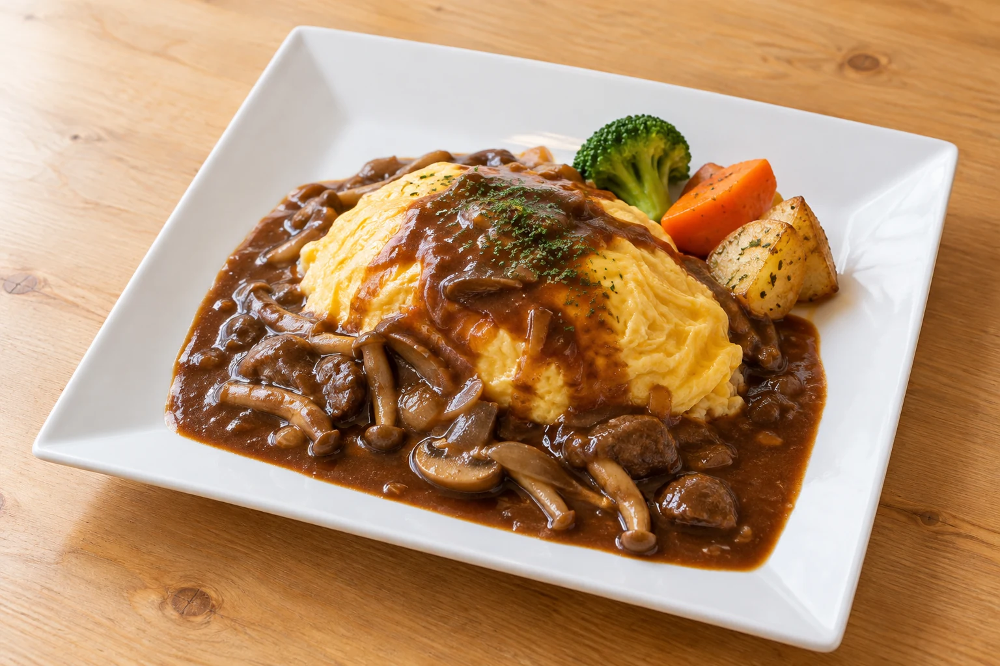
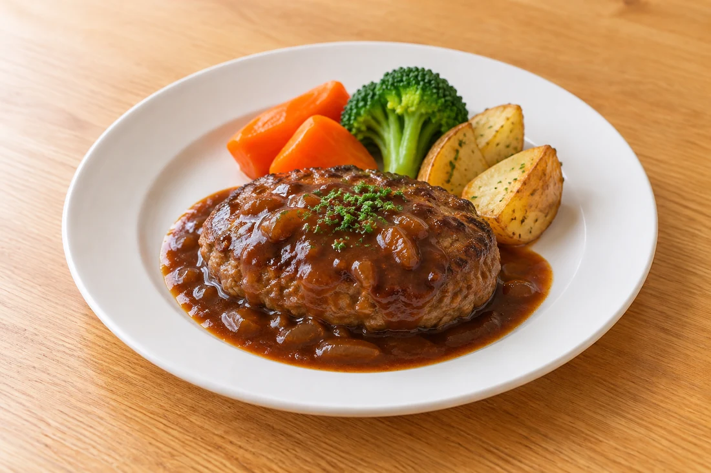
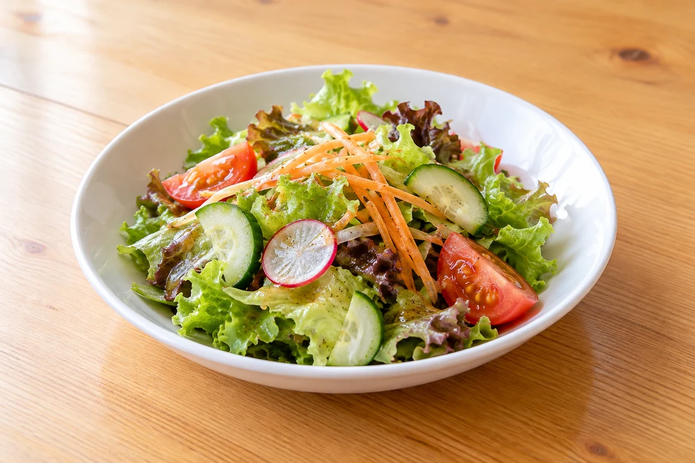
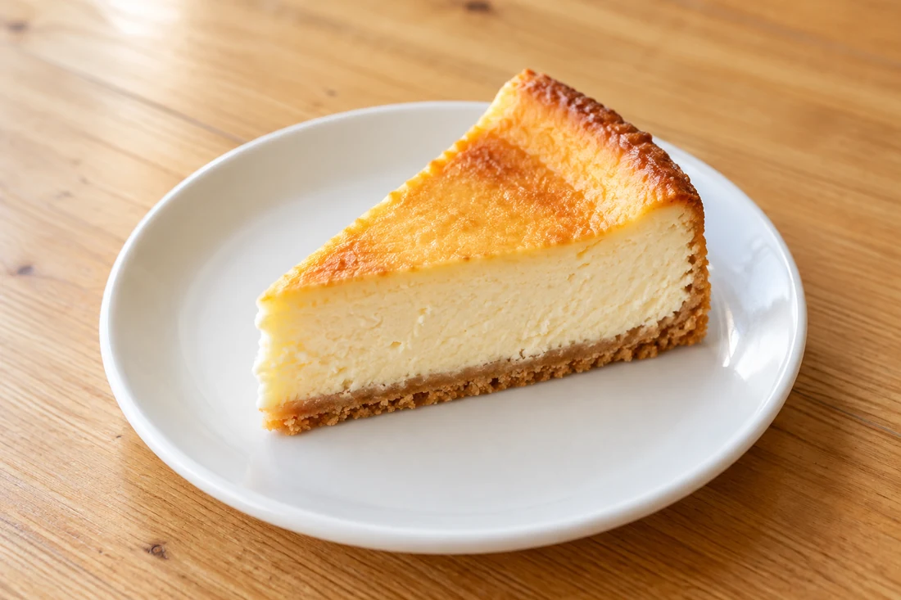
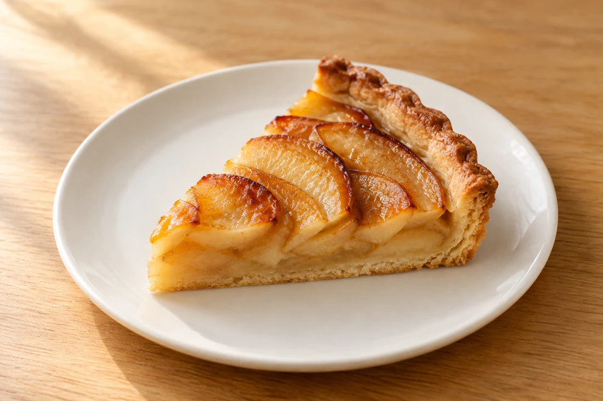

りんごと生姜の和風ソース。香ばしい鶏肉と、やわらかな甘みを。
YAMAGATA / ISUZU ごはんと、おやつと。
野菜を添えた洋食と、
お菓子のアトリエから届く甘い時間。
今日の寄り道は、カシェルポポへ。
山形市五十鈴3丁目1-14

01 / LUNCH 今日のごはん
メインを選ぶ楽しみと、野菜の彩り。
サラダと日替わりスープが付くランチで、
お昼の時間をゆっくりと。

1,300円〜
メイン料理に、サラダと日替わりスープ。
ハンバーグなど、日替わりのお料理から
その日の気分でお選びください。
写真は主菜の一例です。メニュー・価格は変更になる場合があります。現在の内容はお電話または店頭でご確認ください。
ランチについて問い合わせる ↗A LITTLE GREEN 野菜のあるひと皿
自家菜園の野菜も取り入れながら、
季節の味を料理へ。
食感や色の違いを、ひと口ずつ楽しんで。
野菜の種類・産地は季節や仕入れで変わります。

03 / SWEETS お菓子のアトリエ
食後にも、おやつの時間にも。
自家製のケーキをひとつ、選ぶ時間から楽しんで。

焼き色と、なめらかな口どけ。コーヒーと合わせて。

りんごの甘みと、香ばしいタルトのひと口。
ケーキの種類・価格・販売状況はその日のショーケースでご確認ください。
COFFEE BREAK
ごはんのあとも、ひと息。
コーヒーや紅茶と、甘いものをどうぞ。
BEFORE YOUR VISIT ご来店の前に
ご希望の日時・人数や、お子さまとのご利用など。
席のご案内と当日の営業をお確かめください。
食物アレルギーについては、注文・ご予約の前にご相談ください。対応できる範囲を店舗へご確認ください。
お子さま向けのメニューがあります。お席のご希望やベビーカーのご利用は、ご来店前にお電話でご相談ください。
月曜定休です。ランチ・カフェ・夜の営業時間は、曜日により変更になる場合があります。ご希望の時間帯はお電話でお確かめください。
店舗前に駐車場があります。満車の場合の駐車場所は店舗へご確認ください。
お祝いのケーキもご相談いただけます。大きさ・内容・お受け取り日・料金は、お電話でお問い合わせください。
ACCESS 店舗のご案内
営業日・時間、メニュー・価格は変更になる場合があります。お出かけ前のご確認をお願いいたします。
Google マップで行き方を見る地図から現在地からの経路を確認できます。
いつもの日にも、うれしい日にも。